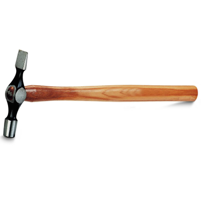

Thing

Sometimes in life you just have to stop and stare. One day it may be your neighbor licking his cat and you look at him and think hey, maybe he’s retarded, or maybe some other day it may be that weird looking monkey fucking his buddy in the zoo and you can’t move away without watching the show first.
It seems now is one of those moments. Because, believe it or not, there it is, in front of your eyes, the most hideous being that can possibly exist, and you can’t even get yourself to comprehend whatever happened to it. Why and what changed it so much and gave it that face with sores all over it? And blood. So much blood! Something peeks from underneath all that blood: something white that could sparkle maybe, if cleaned. And, my god, those eyes. Those bulgy eyes, starring at you like crazy.
You should feel repulsion, or at least mercy, but inside of you it’s only rage. Pure fucked up rage burning up and conquering you piece by piece.
Why? Why can’t she let you be? Why does she have to judge you even when she looks like that? Why does she have power over you when she’s obviously dead?
Without even thinking, you grab the closest thing that’s next to you. It’s a hammer and for a split second you look at it and you don’t even understand why the hell is there a hammer in your kitchen, next to that dead woman with her bulgy eyes. And then you think you got it. You murdered that poor woman and she was somehow related to you (you don’t seem to remember how though). You throw the hammer away and look at that woman in horror. You called her an it, a thing, and you don’t understand how could you do that. You are not a bad human being. Or at least that’s what you believed before…well before all of this.
You turn around and now that dead woman is behind you. Your mind starts working fast. You can’t remember her, not really, and you can’t even remember hitting her with the hammer. But you are sure that’s what really happened because all the signs are there for you to see. There’s the hammer, your bloody hands and of course the dead body lying on your kitchen floor, like a puppet.
So, what should you do? Call the police, of course. But how will you explain what had happened when you can’t even remember anything at all? It doesn’t matter, that’s what a normal, sane person would do in a situation like this.
You reach for the phone that’s conveniently on the table. You swipe the lock and start typing those three numbers.
That’s the moment when you hear it. That coarse sound coming from behind you. Your hands freeze on the phone and for a second you think victory, maybe she’s alive, maybe you can help her, maybe you won’t have to be convicted of murder. But just as you turn around you understand that’s a stupid thought. She can’t be alive. That blood, that bone sparkling, those bulgy dead eyes…she is a corpse for sure.
And when your eyes meet hers you have just enough time to remember everything. To remember the truth.
You didn’t kill her. You can’t kill something that is already dead.
She came to your house and she tried to suck your life, or maybe your soul, you don’t know for sure. Actually, you have no idea what was the thing she wanted to do to you, it doesn’t even matter now. You tried to defend yourself. Thank God, you had that hammer stashed in one of the drawers. You grabbed it and hit her. And when she was down, you kept hitting her and she kept having a grin on her hideous face. So, you hit and hit until her face turned red and you heard a few popping sounds.
And then…who knows? Maybe your mind, overwhelmed by everything that happened, tried to erase the last couple of minutes. For a while, you just stand there, st
Comments